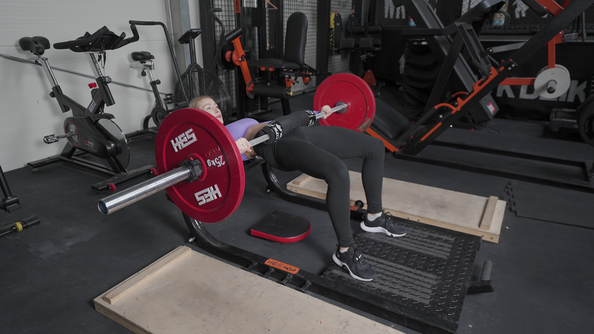
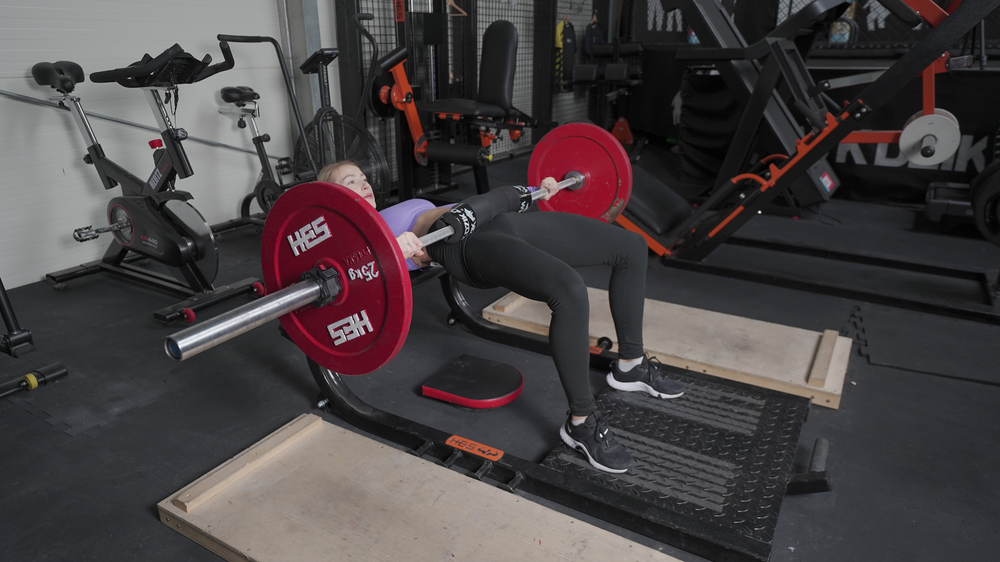

HIP THRUST
 

1. Oprzyj się o ławeczkę, tak aby łopatki swobodnie na niej spoczywały.
2. Wsuń sztangę (zabezpieczoną gąbką) na swoje biodra. Ugnij kolana.
3. Stopy oddal od oparcia tak, aby przy wyproście biodra między łydką, a udem utworzył się kąt prosty.
4. Palce skieruj przed siebie, a stopy rozstaw na szerokość bioder.
5. Głowy nie odchylaj, patrz przed siebie.
6. Mocno napnij brzuch, podwijając miednicę.
7. Wykonaj wyprost biodra, wypychając sztangę w górę, do momentu aż Twoje biodra zrównają się z tułowiem. Napnij pośladki.
8. Kontrolując ruch, trzymając napięty brzuch, powróć do pozycji wyjściowej.